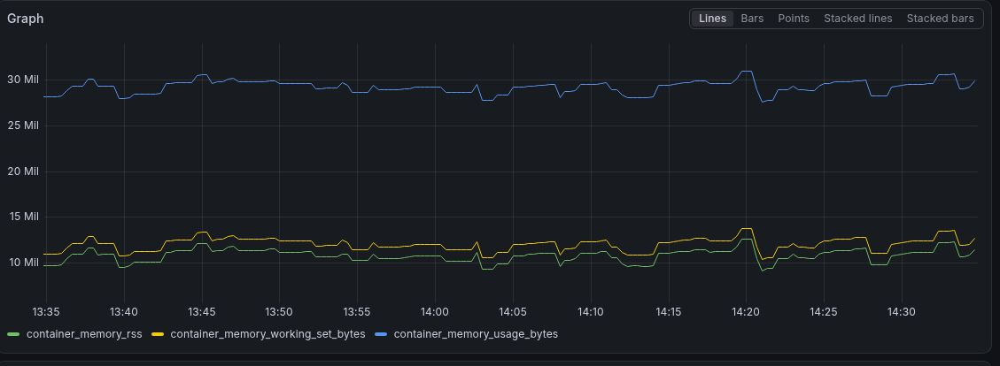
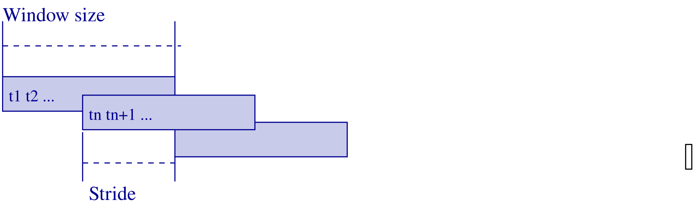
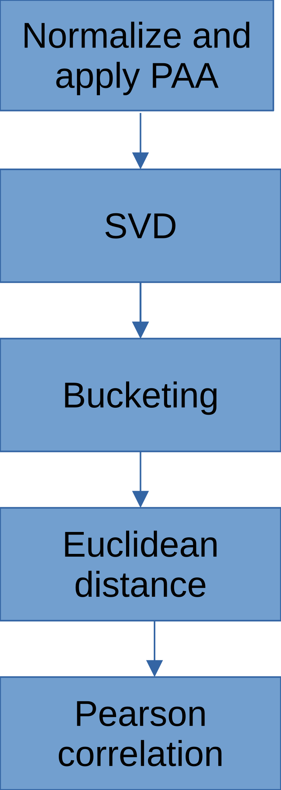

Correlating Time Series at Scale
Wouldn’t it be nice if you could see pairwise correlation information for all your observability time series? What’s correlated with what, which time series have become correlated or uncorrelated? I think this would be useful, both for troubleshooting and for discovering dependencies in complex architectures. Request latency against one endpoint just spiked and became correlated with database query latency? That sounds worth knowing.
Looking for correlations is similar to what I do when I try to understand system behaviour: I look at graphs for key time series (such as end-user request latency and error rates), I look for trends and spikes, and then I look for similar trends and spikes across time series for related systems. But often I have to guess which systems are related, and which time series exist for them; surfacing the time series correlated with the ones I’m investigating would save me time.
Most systems have a lot of time series, so computing all correlated pairs seems infeasible. A small to medium-sized Kubernetes cluster will easily have several tens, maybe hundreds of thousands of time series. Algorithms to find all correlated pairs tend to be quadratic, so even with judicious pruning, finding all pairs looks difficult.
I came across a paper paper proposing an algorithm for finding all pairs of time series with a Pearson correlation above a given threshold quickly and decided to give it a try. I’ve implemented this algorithm as a tool and have run it on data collected by Prometheus.
Main Results
My goal was to find all potentially relevant correlations in a medium-sized Kubernetes cluster within reasonable time. “Reasonable time” means I want results for a given time window to be available within a few minutes of the end of the time window. And “all potentially relevant” correlations means I want all correlations, but I’ll allow pruning time series for which correlation analysis is not useful (for example, it makes sense to exclude the synthetic ALERTS time series).
The CorrJoin paper authors only tested their algorithm for up to 5000 time series. In my experiments, the algorithm was able to process up to 60k time series on a single machine. I used a single process with 1 cpu and 4Gi memory. At this point, the main challenge becomes the result presentation, and this is something I am still working to improve.
I thought I’d have to start parallelizing the CorrJoin algorithm in order to cope with even a modestly sized Kubernetes cluster (3-4 nodes running the otel demo application in addition to the CorrJoin system itself). So far, I have not had to parallelize, but if or when I do, that, too, looks feasible.
Below, I’ll outline what I did to get this to run, and how to scale up further.
Why does correlation matter?
Consider the various metrics that show a container’s memory usage. The picture below shows three of them, all for the
same container. I have chosen container_memory_rss, container_memory_working_set_bytes and
container_memory_usage_bytes. These all come from cAdvisor and they measure slightly different things,
but for a lot of applications, they will move mostly parallel to each other. The algorithm I implemented will find that they are strongly correlated.

There are many reasons why time series are correlated. Some of them measure the same underlying phenomenon; some measure different things, but the things they measure are related to each other. For example, the memory usage of a web application may be correlated with the number of incoming requests. That’s a direct causal relationship.
Sometimes, time series are correlated because they are related to a common underlying cause. This is the case with the memory metrics here.
You can use the information that two time series are usually correlated to derive information about systems interactions. This can be useful in poorly documented or very complex systems.
The other interesting insight you can get from correlation analysis is when time correlations start or stop.
For example, when container_memory_rss and container_memory_working_set_bytes stop being correlated,
usually some i/o is happening: the main difference between these two metrics is that the working set includes
the active file cache, and rss doesn’t. This makes correlation information useful in troubleshooting.
How does the algorithm work?
The algorithm processes overlapping windows of time series data. It takes the values of time series within a time window, normalizes them, and then applies some quick checks to discard pairs of time series that are definitely not correlated. The algorithm guarantees that no correlated time series will be discarded in this step (no false negatives). It computes the Pearson coefficient on the remaining pairs. The overall speed of the system depends mainly on the number of pairs that the Pearson coefficient gets computed on.

The picture shows the values t1 t2 ... tn tn+1 ... for a time series grouped into windows. The overlap between windows is called a stride.
In the picture, we’re using a stride that is half the window size.
My implementation obtains time series from Prometheus using the remote write protocol. In the experimental setup, Prometheus scrapes time series every 20 seconds, and I usually set the window size to 100, with a stride of 50. Other values are possible and can make sense; in this first step, I was focused on whether I could get the system to work at all.
The CorrJoin algorithm treats time windows over sets of time series as real matrices. There is one row per time series, and one column per sampling time. The sampling times are assumed to be aligned, and all time series need to have values in every column. My implementation interpolates missing values (these come about due to different scrape intervals in Prometheus). All values are normalized before processing.

The CorrJoin algorithm first applies a step called PAA, and then a singular value decomposition. PAA stands for Piecewise Aggregate Approximation, and it replaces sequences of time series values with their means. Intuitively, this is similar to what happens when you zoom out the time series graph: you get a less detailed view.
Post-PAA, we have a matrix with the same number of rows as before, but a smaller number of columns. The algorithm applies a singular value decomposition to that matrix. Then we project the row vectors of the original matrix onto the space spanned by the top singular vectors; this makes it easier to tell dissimilar time series apart.
Next, the algorithm sorts time series into buckets, where the buckets are leaves of an epsilon-tree. We perform pairwise comparison of time series in the same bucket and in neighbouring buckets; the Pearson correlation is computed only for pairs of time series that are close together under Euclidean distance.
Can this scale to all the time series in a Kubernetes cluster?
The paper authors only tested with up to 5000 time series, and I was curious how this would hold up with higher numbers. I ran the system with small Kubernetes clusters (3-4 nodes), in which I installed a few sample systems just to generate time series. Among other things, the correlation join system itself ran in these clusters, but I also installed applications such as Mattermost as well as the otel demo setup.
Depending on Prometheus configuration and what is installed in the cluster, this gives me anywhere between 30k and 80k time series that get forwarded to the correlation join implementation via remote write. In order to keep up with the incoming data, I need to process the data for a time window (100 values per time series) in the time between strides. For the current setup, that means I have 50 * 20s = 1000 seconds. For the time being, my implementation runs on a single host, uses 1 cpu and up to 4Gi memory.
This is feasible, though I ran into a few surprises along the way. I’ll go through the most relevant steps of the algorithm and discuss how they hold up under larger number of time series, and which further scaling options I can see for them.
Normalization and PAA are fairly straightforward and could be easily parallelized if necessary.
Singular Value Decomposition
The CorrJoin algorithm relies on singular value decomposition. The matrix it processes has one row per time series and one column per value in a window, so we have 100 columns and up to 80k rows here. My implementation uses the SVD implementation from gonum.org’s mat package. This implementation
just failed when I fed it large matrices. The same happened when I ran a quick test of the same data in Python using scikit’s svd implementation.
There’s a few reasons why an SVD algorithm would fail, but in this case, an inspection of the data reveals that we have a lot of rows with very small or even all-zero values. Most of these are constant time series (more on those later). We also have a lot of collinear or near-collinear rows. Both of these can cause SVD implementations to fail. We can drop the all-zero rows; we also drop rows that have constant values. All those rows are collinear, and all these time series are trivially correlated in the time window under consideration, so dropping them here loses no information. For most of our experiments, this alone was enough to make the SVD feasible.
However, I did not want to rely on the observation that “a lot of time series are constant”, because time series may stop being constant precisely when the system is under stress, and that’s when you’d most want the correlation analysis to work. So the system has to work with large numbers of non-constant time series.
In general, we need to be able to compute the SVD on tall matrices. We risk running out of memory for large numbers of rows (when exactly this happens depends on the choice of algorithm and implementation). We cannot easily parallelize this part of CorrJoin. However, it is actually ok to use approximate results; the SVD results help in deciding quickly which pairs of time series are definitely not correlated, and using approximate results makes that decision a little less sharp, but it does not introduce false negatives. My implementation computes an approximate SVD on a subset of the time series.
I currently take a random sample of 20k non-constant time series and this has been working well. We could improve this by sampling more intelligently.
The original paper works with three singular values. I’ve increased this to five based on experiments. For larger time series sets, I think this will have to be increased again.
Bucketing
Following SVD, the CorrJoin algorithm groups time series into buckets based on an epsilon-tree. The tree has as many layers as we’ve computed singular values (for my current setting this is five). If vt is the vector belonging to our time series after the SVD has been applied, then the first five components of
vt are the coordinates along the axes corresponding to the dominant singular vectors. The ith component of vt tells us which branch to use on the ith level of our epsilon tree.
We perform pairwise comparisons of time series within each bucket and between adjacent buckets. For deciding adjacency, imagine the buckets as corners of a five-dimensional hypercube. The within-bucket comparisons take time quadratic in the bucket size. For the between-bucket comparisons, bucket size is important, but so is the number of singular values. In my experiments, running time was dominated by a few excessively large buckets. We’ve already excluded constant time series (otherwise they’d be the biggest bucket); the next biggest bucket are time series whose first derivative is a constant. These are counters that go up very regularly.
So far, I have not parallelized bucket processing. This would be possible to do; you can create lists of pairs of time series that should be compared, and work on those in parallel, so long as all worker processes have access to the time series data they need. I have not had to do this so far because dropping the constant time series and identifying “regular counters” early was enough.
Storing and evaluating the results
After finding correlated pairs, you probably want to store that information somewhere and then visualize or explore it later. I’ve experimented with writing the data to Parquet files and with writing it to an otel endpoint (I put a VictoriaMetrics instance behind that endpoint). Both work, though when you find a lot of correlated time series, obviously writing all that information to disk and indexing it becomes its own challenge. That’ll have to wait for another blog post though.
Further scaling and optimizations?
The filtering that the CorrJoin algorithm performs on the Prometheus time series is close to optimal; over 90% of the time series that make it through filtering are actually correlated. This means when we’re computing a Pearson coefficient, it’s nearly always on a correlated pair. There doesn’t seem to be a lot of room for improving the filtering.
What we can improve is parallelizability; I’ve sketched a few ideas for that above. Processing time is dominated by the number of pairs that we compute the Pearson coefficient for, and this in turn is dominated by the size of the largest buckets. The largest set of nontrivially correlated time series is a lower bound on the size of the largest bucket, and since the filtering seems to be close to optimal, this is quite a tight bound. Thus the pairwise comparison step is the one where parallelization is going to help the most.
Outside the algorithm itself though, the main thing that needs work is storing and analysing the results. That topic will have to get its own blog post.